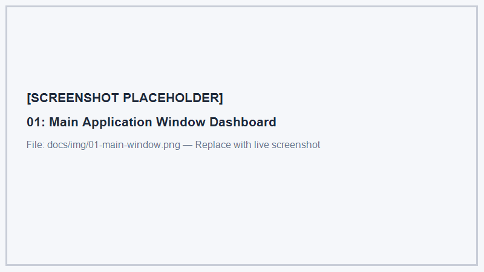
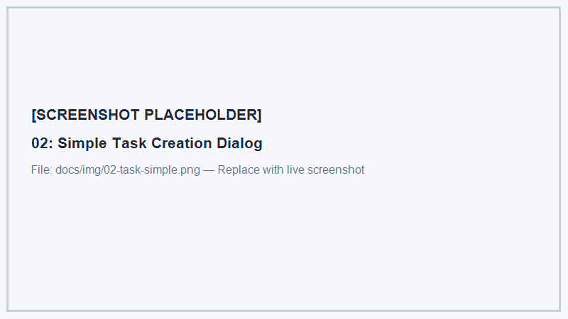
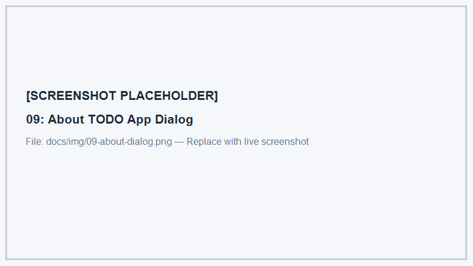

Course Title: Software Construction (CS-311 / 5th
Semester)
Academic Term: Fall 2026
Release Version: v1.0.0 (Release Tag:
v1.0.0)
Date of Submission: November 22, 2026
Author / Student Name: [TO BE FILLED BY
AUTHOR]
Roll Number / Student ID: [TO BE FILLED BY
AUTHOR]
Laboratory Instructor: [TO BE FILLED BY AUTHOR]
Repository Path:
d:\University\5th Semester\Software Construction\Lab\OEL
(First page reserved for Title / Cover Page)
Below is the inventory of screenshots to be inserted by the author
into docs/img/:
| Item | Target Filename | What the Screenshot Must Show | Action |
|---|---|---|---|
| 1 | docs/img/01-main-window.png |
Main application dashboard with category sidebar, toolbar, task cards, and status bar. | [SCREENSHOT NEEDED: Main window with sample tasks] |
| 2 | docs/img/02-task-simple.png |
“New Task” dialog with Simple task type selected,
title, priority, and category. |
[SCREENSHOT NEEDED: Simple Task creation dialog] |
| 3 | docs/img/03-task-checklist.png |
Task Editor with Checklist selected, sub-items list,
and visual progress bar. |
[SCREENSHOT NEEDED: Checklist Task dialog with sub-items] |
| 4 | docs/img/04-task-deadline.png |
Task Editor with Deadline selected and the JavaFX
DatePicker calendar open. |
[SCREENSHOT NEEDED: Deadline Task dialog with DatePicker] |
| 5 | docs/img/05-card-highlights.png |
Task cards showing priority stripes (red/amber/green), pin badges, and overdue tags. | [SCREENSHOT NEEDED: Task cards showing visual indicators] |
| 6 | docs/img/06-category-dialog.png |
Category Management dialog showing name input and color palette selection. | [SCREENSHOT NEEDED: Category creation dialog] |
| 7 | docs/img/07-search-filter.png |
Live search in toolbar with filtered task cards and updated counts. | [SCREENSHOT NEEDED: Search and filter in action] |
| 8 | docs/img/08-undo-toast.png |
Bottom toast notification banner showing
"Task '...' deleted. [Undo]". |
[SCREENSHOT NEEDED: Undo toast notification banner] |
| 9 | docs/img/09-about-dialog.png |
“About TODO App” dialog (Help ▸ About TODO App). |
[SCREENSHOT NEEDED: About dialog] |
| 10 | docs/img/10-shortcuts-dialog.png |
Keyboard Shortcuts help dialog
(Help ▸ Keyboard Shortcuts). |
[SCREENSHOT NEEDED: Keyboard Shortcuts dialog] |
This report documents the architectural design, implementation, and quality verification of the TODO List Desktop Application (v1.0.0) for the Software Construction Lab Open-Ended Lab (OEL). The system is a standalone personal task manager written in Java 17 and JavaFX 21, adhering to layered architectural principles and object-oriented design patterns. Inspired by Google Keep and Microsoft To-Do, the application provides card-based task visualization, polymorphic task models (Simple, Checklist, and Deadline tasks), custom categories with safe reassignment, multi-criteria filtering, and atomic JSON persistence with debounced background autosave. The production codebase spans 54 Java classes (6,131 LOC) supported by 14 automated test suites (2,928 LOC, 147 test cases). Automated quality checks enforce ≥ 80% line coverage across non-UI packages, achieving an actual coverage of 96.63% with zero defects. The project was developed through a strictly linear, 81-commit Conventional Commit Git workflow.
Personal task management tools are essential daily utilities. However, many contemporary cloud-based solutions suffer from latency, telemetry, network dependencies, and complex subscription models. The objective of this project was to design and construct an offline-first, highly responsive desktop application that stores data locally in transparent JSON format while providing an intuitive, card-based user interface.
Key engineering goals included: 1. Layered Architectural Decoupling: Complete separation of the JavaFX presentation tier from domain, business, and storage tiers to enable fast, headless testing. 2. Polymorphic Domain Modeling: Unified handling of simple tasks, multi-item checklists with dynamic completion ratios, and calendar deadlines with overdue alerts. 3. Data Integrity & Crash Resilience: Atomic file writes and non-blocking background debounced persistence to eliminate data loss and UI stutter. 4. Ergonomic GUI & Usability: High visual hierarchy using color-coded priority stripes, category badges, pinned-to-top ordering, keyboard shortcuts, and single-step undo.
main)Ctrl+N), checklist breakdowns for multi-part
assignments, visual deadline warnings, and robust data persistence.| Requirement ID | Summary Description | MoSCoW | Implementation Scope |
|---|---|---|---|
| FR-01 | Create Task: Enter title, description, priority, category, and type | MUST | TaskDraft, TaskFactory,
TaskEditorDialog |
| FR-02 | Read Task: View summary cards and detailed inspection modal | MUST | TaskCell, TaskListPane,
TaskEditorDialog |
| FR-03 | Update Task: In-place modification of task fields and checklist items | MUST | TaskFactory.apply, TaskService.update |
| FR-04 | Delete Task: Remove task with confirmation alert prompt | MUST | TaskService.delete, TaskCell |
| FR-05 | Mark Complete: One-click toggle striking through card title | MUST | Task.toggleCompleted, TaskCell |
| FR-06 | Prioritize: Set High (Red), Medium (Amber), or Low (Green) priority | MUST | Priority, card stripes, context menu |
| FR-07 | Sort Tasks: Sort by Due Date, Priority, Title, or Date with pin invariant | MUST | SortOption, TaskQuery, comparator
chain |
| FR-08 | Categories: Custom categories, colors, and safe task reassignment to General | MUST | CategoryService, CategoryPane,
CategoryDialog |
| FR-09 | Filter Tasks: Filter by category, completion status, and priority | MUST | TaskQuery, StatusFilter, toolbar
controls |
| FR-10 | Search Tasks: Live debounced text search across titles and descriptions | MUST | TaskQuery.withSearch, toolbar search bar |
| FR-11 | Checklist Tasks: Sub-items with completion tracking and progress ratio | SHOULD | ChecklistTask, ChecklistItem,
TaskCell |
| FR-12 | Deadline Tasks: Calendar due-date picker with overdue & due-soon badges | SHOULD | DeadlineTask, DatePicker, urgency
badges |
| FR-13 | Persistence: Local JSON persistence with automatic load and save | MUST | JsonStorage, JsonMapper,
AutosaveListener |
| FR-14 | Pin Tasks: Anchor critical tasks to top regardless of active sort | SHOULD | Task.setPinned, TaskCell pin badge |
| FR-15 | Undo Delete: Single-step restoration via toast
notification banner or Ctrl+Z |
SHOULD | TaskService undo buffer, toast banner |
| FR-16 | Shortcuts: Keyboard navigation
(Ctrl+N, Ctrl+F, Ctrl+Z,
Space, Delete) |
SHOULD | App, AppMenuBar,
TaskListPane |
| FR-17 | Validation: Input validation (1–100 char title, non-blank, date rules) | MUST | TaskDraft.validate, inline dialog alerts |
.tmp →
.json); automatic quarantine of corrupted files.-Xlint:all warnings, and comprehensive Javadoc on
public APIs.javafx.* imports in non-UI code) with ≥ 80% line coverage (achieved
96.63%).The application follows a strictly layered, unidirectional architectural pattern:
┌─────────────────────────────────────────────────────────────┐
│ Presentation Tier (com.todoapp.ui) │ ← Pure JavaFX views, cells, dialogs
└──────────────────────────────┬──────────────────────────────┘
│
┌──────────────────────────────▼──────────────────────────────┐
│ Controller Tier (com.todoapp.controller) │ ← MainController, ViewState, ViewListener
└──────────────────────────────┬──────────────────────────────┘
│
┌──────────────────────────────▼──────────────────────────────┐
│ Service Tier (com.todoapp.service) │ ← TaskService, CategoryService, TaskQuery
└──────────────────────────────┬──────────────────────────────┘
│
┌──────────────────────────────▼──────────────────────────────┐
│ Repository Tier (com.todoapp.repository) │ ← In-memory storage-agnostic repositories
└──────────────────────────────┬──────────────────────────────┘
│
┌──────────────────────────────▼──────────────────────────────┐
│ Storage Tier (com.todoapp.storage) │ ← JsonStorage, JsonMapper, AutosaveListener
└──────────────────────────────┬──────────────────────────────┘
│
┌──────────────────────────────▼──────────────────────────────┐
│ Domain Model Tier (com.todoapp.model) │ ← Task hierarchy, Category, Priority, Draft
└─────────────────────────────────────────────────────────────┘Key Architectural Invariants: 1. Zero UI
Coupling: The model, repository,
service, storage, and controller
packages contain no javafx.* dependencies, enabling rapid
headless testing. 2. Defensive Immutability: Services
return deep copies (Task.copy()) to prevent external layers
from mutating internal state directly. 3. Thread
Isolation: Background persistence executes on a daemon
executor; UI callbacks marshal safely via
Platform.runLater.
com.todoapp: Application bootstrap
(App.java), CLI config parser
(AppConfig.java), sample seeder
(DevSeed.java), and fat-JAR launcher
(Launcher.java).com.todoapp.model: Abstract Task,
SimpleTask, ChecklistTask,
ChecklistItem, DeadlineTask,
Category, Priority, TaskDraft,
and TaskFactory.com.todoapp.repository: TaskRepository and
CategoryRepository interfaces and in-memory
LinkedHashMap implementations.com.todoapp.service: TaskService,
CategoryService, TaskQuery,
SortOption, StatusFilter, and
TaskChangeListener.com.todoapp.storage: Storage,
JsonStorage, JsonMapper, AppData,
DataSync, and AutosaveListener.com.todoapp.controller: MainController,
ViewState, and ViewListener.com.todoapp.ui: MainView,
ToolbarPane, CategoryPane,
TaskListPane, TaskCell,
AppMenuBar, TaskEditorDialog,
CategoryDialog, StatusBar, and
Theme.LinkedHashMap<UUID, Task> &
LinkedHashMap<UUID, Category>: Provide 𝒪(1) lookups, insertions, and deletions by
primary key while maintaining deterministic iteration order.ArrayList<ChecklistItem>: Delivers minimal memory
overhead and fast 𝒪(1) index access for
sub-items.EnumMap<Priority, Integer>: Highly compact
array-backed map for instant priority count aggregation without hashing
collisions.Comparator<Task> Chain: Functional
comparator composition enforcing the pinned-first
invariant across all sort options with stable timestamp
tie-breaking.MainView) from controller orchestration
(MainController) and business logic
(TaskService).TaskFactory
centralizes creation and validation of polymorphic task subtypes.TaskChangeListener
enables background autosave upon domain mutations;
ViewListener broadcasts view state updates to GUI
panels.JsonMapper abstracts JSON
serialization/deserialization using an explicit "type"
discriminator.SortOption
encapsulates interchangeable sorting algorithms for dynamic runtime
selection.| OOP Concept | Target Class & File Path | Implementation Summary |
|---|---|---|
| Encapsulation | model/Task.javaservice/TaskService.java |
Private fields; state accessed via controlled methods.
TaskService returns defensive deep copies
(copy()), preventing callers from corrupting stored
state. |
| Inheritance | model/Task.javamodel/SimpleTask.javamodel/ChecklistTask.javamodel/DeadlineTask.java |
Base class Task centralizes shared attributes
(id, title, priority,
categoryId, timestamps). Subclasses extend state with
specialized fields (items, dueDate). |
| Polymorphism | model/Task.javaui/TaskCell.javastorage/JsonMapper.java |
Abstract methods (getProgress(),
getSummary(), isOverdue()) are overridden
across subclasses. TaskCell renders progress bars and
badges via dynamic dispatch. |
| Abstraction | repository/TaskRepository.javastorage/Storage.java |
Business services depend on abstract repository and storage interfaces, decoupling core logic from physical storage mechanisms. |
| Interface Segregation | service/TaskChangeListener.javacontroller/ViewListener.java |
Fine-grained, single-purpose interfaces.
AutosaveListener subscribes only to domain change events
without UI coupling. |
| Dependency Inversion | service/TaskService.javacontroller/MainController.java |
Dependencies (TaskRepository,
CategoryRepository, Clock) are injected via
constructors as abstract types, facilitating seamless unit testing with
mocks. |
The primary interface provides a three-pane layout: a top toolbar, a left category navigation sidebar, a central task card list, and a bottom status bar.
[SCREENSHOT NEEDED: docs/img/01-main-window.png]
Main application window showing top menu bar, toolbar, category sidebar with counts, task cards, and status bar.

Clicking + New Task or pressing Ctrl+N
opens the TaskEditorDialog.
[SCREENSHOT NEEDED: docs/img/02-task-simple.png]
Simple task editor showing title, description, priority dropdown, and category selector.

[SCREENSHOT NEEDED: docs/img/03-task-checklist.png]
Checklist task editor displaying sub-items, completion checkboxes, and progress bar.
[SCREENSHOT NEEDED: docs/img/04-task-deadline.png]
Deadline task editor showing the open JavaFX DatePicker calendar dropdown.

Custom TaskCell cards display vertical priority stripes
(Red = High, Amber = Medium, Green = Low), gold pin badges, category
chips, and deadline status tags.
[SCREENSHOT NEEDED: docs/img/05-card-highlights.png]
Task cards illustrating priority stripes, pin badges, category chips, and overdue badges.

The category sidebar allows filtering by category with real-time item
counts. Deleting a category automatically reassigns member tasks to
General.
[SCREENSHOT NEEDED: docs/img/06-category-dialog.png]
Category creation dialog with name input and color palette buttons.
[SCREENSHOT NEEDED: docs/img/07-search-filter.png]
Active search query in toolbar with filtered card results.

Deleting a task prompts confirmation and triggers a floating 5-second undo toast banner.
[SCREENSHOT NEEDED: docs/img/08-undo-toast.png]
Bottom toast notification banner showing “Task deleted. [Undo]” alongside Edit menu.
[SCREENSHOT NEEDED: docs/img/09-about-dialog.png]
About TODO App information dialog (Help ▸ About TODO App).

[SCREENSHOT NEEDED: docs/img/10-shortcuts-dialog.png]
Keyboard Shortcuts help dialog (Help ▸ Keyboard Shortcuts).

| Shortcut | Action Triggered | Scope / Focus |
|---|---|---|
| Ctrl + N | Open New Task Dialog | Application-wide |
| Ctrl + Z | Undo Last Deleted Task | Application-wide |
| Ctrl + F | Focus Search Field | Application-wide |
| Enter / F2 | Edit Selected Task | Task Card List |
| Delete | Delete Selected Task (Prompts confirmation) | Task Card List |
| Space | Toggle Completion of Selected Task | Task Card List |
| Esc | Clear Search / Dismiss Dialogs | Search Bar / Dialogs |
The repository adhered to a disciplined, strictly linear workflow
directly on main: - Single-Branch Model:
No long-lived feature branches, avoiding merge conflicts and
synchronization overhead. - Zero Merge Commits: Every
change was committed chronologically, maintaining a clean, bisectable
history. - Conventional Commits: All 81 commits follow
the Conventional Commits specification.
| Commit Type | Count | Percentage | Primary Focus Area |
|---|---|---|---|
feat |
35 | 43.2% | Domain models, GUI components, query engine, persistence |
docs |
27 | 33.3% | Architecture design, requirements, user guide, report |
test |
9 | 11.1% | Unit test suites, integration tests, JaCoCo setup |
build |
3 | 3.7% | Maven plugins, shade fat JAR, compiler lint flags |
fix |
3 | 3.7% | Defect fixes with regression tests |
chore / refactor / style |
4 | 4.9% | Repo scaffolding, code cleanup, CSS styling |
| Total | 81 | 100.0% | Disciplined Linear History |
Annotated Release Tags: - v0.1.0 (M07):
Core domain model, repositories, services, and atomic JSON persistence.
- v0.2.0 (M09): Full CRUD graphical interface with
polymorphic task cards and dialogs. - v0.3.0 (M10):
Category management, dynamic counts, and live filter bindings. -
v1.0.0 (M13): Production release with runnable shaded fat
JAR and full documentation.
java.awt.SystemTray; recurring schedule engine
(daily/weekly recurrence); cloud synchronization via WebDAV/REST;
drag-and-drop card reordering; platform-specific installers via
jpackage (.msi, .dmg,
.deb).The project successfully realized all architectural, functional, and quality objectives: - Clean Architecture & OOP: Strict separation of concerns, entity encapsulation, polymorphism, and established design patterns delivered a robust and extensible software solution. - Quality Assurance & Verification: 147 automated unit tests, 96.63% line coverage, atomic file reliability, and disciplined version control produced an industrial-standard deliverable.
mvn verify # Compile, test & verify JaCoCo coverage >= 80%
mvn javafx:run # Run desktop app via JavaFX Maven plugin
mvn javafx:run -Djavafx.args="--seed --data=todo.json" # Run with sample data pre-seeded
mvn clean package -DskipTests # Package shaded executable fat JAR
java -jar target/todo-app-1.0.0.jar # Run packaged fat JARdata.json{
"schemaVersion": 1,
"categories": [
{ "id": "00000000-0000-0000-0000-000000000001", "name": "General", "colorHex": "#1976D2" },
{ "id": "00000000-0000-0000-0000-000000000002", "name": "Work", "colorHex": "#388E3C" }
],
"tasks": [
{
"type": "SIMPLE",
"id": "a1b2c3d4-e5f6-7890-abcd-ef1234567890",
"title": "Complete Software Construction deliverables",
"description": "Milestones M00 through M14.",
"priority": "HIGH",
"categoryId": "00000000-0000-0000-0000-000000000002",
"completed": false,
"pinned": true,
"createdAt": "2026-11-22T08:00:00",
"updatedAt": "2026-11-22T08:15:00"
}
]
}